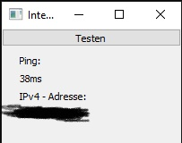

Dies ist ein kleiner praktisches Tool, um die IPv4-Adresse und den Ping schnell herauszufinden. Für Entwickler gibt es kleine Anmerkungen: Der Code ist sehr unsauber geschrieben und die Laufzeit ist nicht wirklich optimal, falls jemand Verbesserungsideen hat oder auch noch weiss, wie man die Uploadrate, Downloadrate, Ports etc. noch hinzufügt, würde ich mich freuen, wenn man sich bei mir meldet. Die Emailadresse ist "nilsweb32@gmail.com".
Hier befinden sich der Downloadlink zur .exe-Datei und der zum .py-Datei: